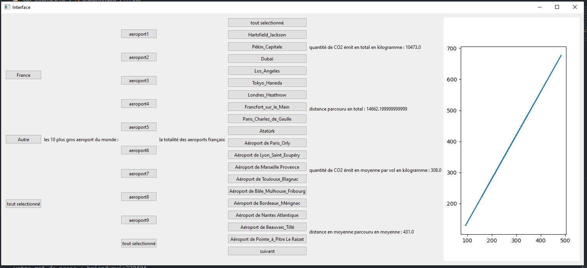

Jeu video
Ce projet fait avec Pygame ma appris à avoir un très bon niveau sur Python en général mais aussi de prendre en compte ma gestion du temps en la rendant meilleur.
Jeu de Dames

Ceci est mon premier projet en Python qui m’a permis de comprendre les bases de la programmation ainsi que d'appliquer les mathématiques.
UX/UI Design

Ceci est le regroupement de toutes mes réalisations pour le UX/UI Design.
Sites Web

Ici vous trouverez les meilleurs sites web Statique/Dynamique que j'ai conçus seul ou en groupe
Analyse D'image

Ici se trouve mon projet sur l'analyse et la recherche d'images spatiales.
Projet Co2
Ceci est un gros projet mettant en pratique toutes les compétences acquises en Base de données, optimisation de code, développement et gestion de projet.